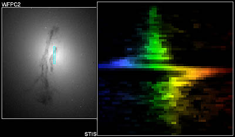
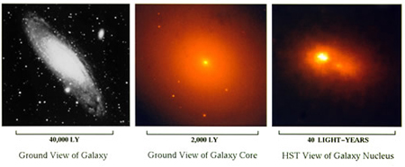
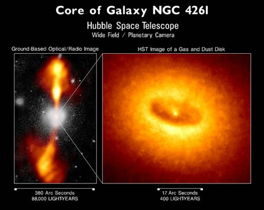

Observations show that the surface brightness of galaxies rises to an (often extremely sharp) peak at the centre of the galaxy. This is the result of the density of stars increasing as we move from the outer regions of the galaxy towards the centre, where stars are separated by only fractions of a light year.

Credit: Gary Bower, Richard Green (NOAO), the STIS Instrument Definition Team, and NASA
However, this is not the only extreme condition found at the centres of galaxies. In particular, it is now thought that the nuclei of all large galaxies contain a supermassive black hole at their centres. Evidence for this comes from high resolution imaging of galactic centres, and from spectroscopic studies of stellar motions in the nuclei of galaxies. For example, the existence of a 3 billion solar mass supermassive black hole at the centre of the Milky Way has been conclusively proven through the measurement of the velocities of stars circling around it. In addition, the extremely bright centres of active galactic nuclei and the galactic jets often seen to emerge from active galaxies are thought to be powered by a supermassive black hole at their centres. Travelling at almost the speed of light, these jets can blast their way through the interstellar medium of their host galaxy and extend for tens or even hundreds of thousands of light years.
|

Zooming in on the nucleus of our nearest large neighbour, M31 (Andromeda), we find two bright central peaks. Each of these bright peaks is thought to be a densely packed swarm of stars around a central supermassive black hole. Surprisingly the true centre of M31 coincides with the dimmer of the two peaks. The second, brighter, peak is thought to be the nucleus of a galaxy ‘swallowed’ by M31.
Credit: NASA/STScI |
In some galaxies, the galactic nucleus is even more complex. Observations of our closest large neighbour, M31 (Andromeda), show its nucleus to have two supermassive black holes circling each other. It is believed that this is the result of M31 ‘swallowing’ another galaxy which also contained a supermassive black hole. If this is so, then we would expect the two galactic nuclei to tidally disrupt and merge with each other in the future. Eventually their supermassive black holes would also merge, accompanied by a burst of gravitational waves. |
| The (dark) dusty disk in this Hubble image of the centre of the elliptical galaxy NGC4621 (right) marks the cool outer edges of the accretion disk of a supermassive black hole. The hot, inner edge of the accretion disk can been seen as a central bright point. The black hole itself lies at the centre of this bright dot and is not visible in this image. The left-hand image shows the jets of material emanating from the black hole. The ~100,000 light year long jets are probably caused by an interaction between the black hole and its accretion disk. |

Credit: Walter Jaffe/Leiden Observatory, Holland Ford/JHU/STScI, and NASA.
|